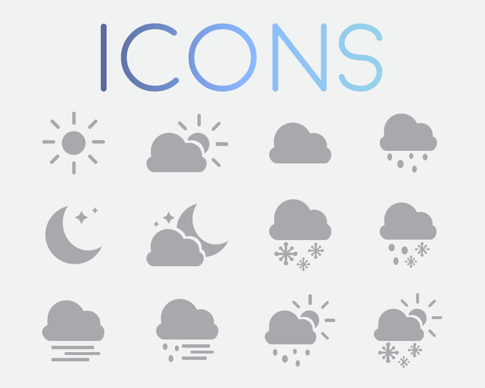
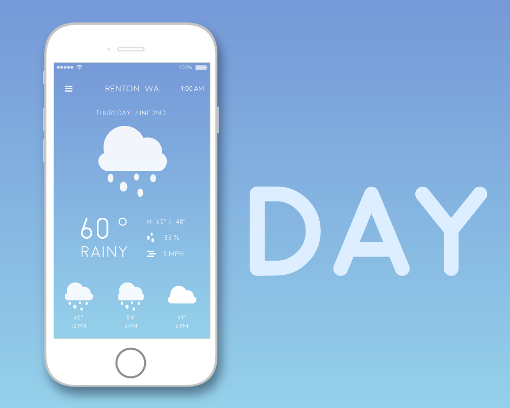
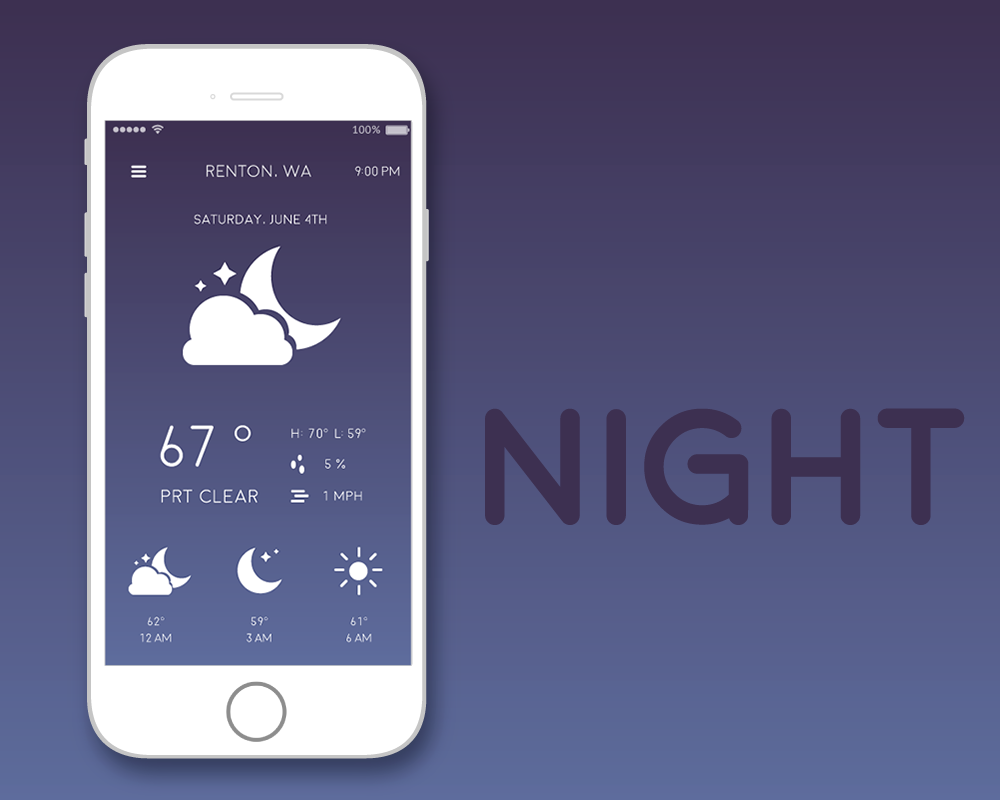

Clouds is a user interface design for a clean and simple weather mobile app. The Users will be able to receive essential weather information without accessing multiple pages.
Type:Visual Design, User Interface Design
Problem: Many weather mobile apps provide extra information that users do not find useful or interesting. Some apps have complicated designs that are not visually appealing to some users.
  
- Use uniform colors on text to achieve simple and clean appearance.
- Demonstrate current state of weather with different color backgrounds.
- Shows date and time location on top of the screen, current weather information in the middle, and
weather information in the future time at the bottom.
- The spaces are not being used efficiently, the information in the middle of the screen looks cramped together.
- The emphasis of the temperature does not display the current weather type to the users.
- The color representations for day time are too bright, the information becomes unreadable.
- The placement of the current location does not fit into the group of weather information.
- The line graph used to represent future weather information does not represent and display the weather information.
- The information of current location and date are being grouped on top of the screen.
- Use weather icons/visualizations as an emphasis to display the current weather.
- The detailed weather information is more spaced out and more readable.
- Use weather icons to display the future weather information rather than a line graph.